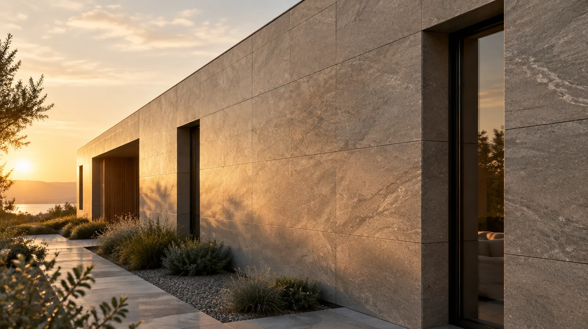
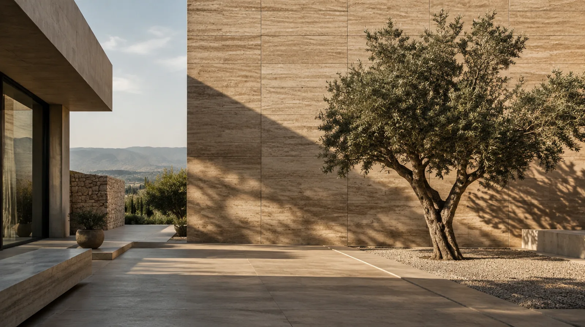

Scroll
What it is
석회암의 결, 쪼갠 돌의 요철, 노출 콘크리트의 흙손 자국. 아르길로는 그 표정을 점토와 광물 분말로 다시 빚어 3밀리미터 안에 담습니다. 칼로 재단되고 기둥을 감싸며, 기존 벽 위에 그대로 붙습니다.
네 가지 라인업
스톤은 지금 주문할 수 있는 라인, 디스플레이와 쏠라는 국내 인증 상태를 함께 표기하는 소개·상담 라인입니다.
자재는 현장에서 증명됩니다
시공사례 전체Self-estimate
숫자가 아니라
데이터로 계산합니다.
같은 아르길로라도 판은 1200×600부터 1200×3000까지, 박스에는 2장부터 60장까지 들어갑니다. 계산식을 코드에 박지 않고 제품마다 판형·박스·로스율을 데이터로 두었기 때문에, 관리자에서 로스율을 바꾸면 이 결과도 그 자리에서 바뀝니다.
외벽 예시로 전체 계산기 열기
Fire performance
외벽은 성적서로 말합니다.
3층 이상이거나 높이 9미터를 넘는 건물의 외벽 마감재는 방화 성능을 확인해야 합니다. 제품마다 국내 시험성적서와 제조사의 해외 인증을 분리해 표기하고, 셀프견적에서 외벽을 고르면 건물 높이부터 묻습니다.
KS F ISO 1182불연 시험 규격
9m · 3F외벽 방화 확인 기준
D-30성적서 만료 사전 경고
Clay · Mineral · 3mm휘어지는 돌타일의 1/4 무게불연 · 준불연 국내 성적서기존 벽 위 덧방곡면 · 기둥 감싸기Clay · Mineral · 3mm휘어지는 돌타일의 1/4 무게불연 · 준불연 국내 성적서기존 벽 위 덧방곡면 · 기둥 감싸기